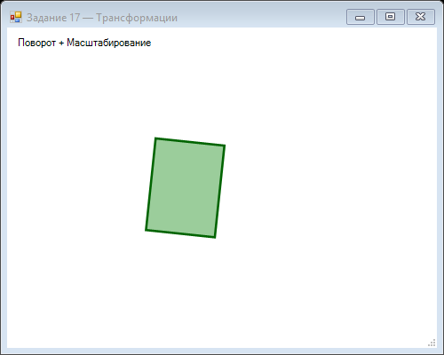

Урок 4.4: Трансформации (поворот, масштаб)
📌 Ключевые моменты этого урока:
- 3 основных трансформации: Translate (сдвиг), Rotate (поворот), Scale (масштаб)
- Порядок имеет значение! Translate → Rotate даёт другой результат чем Rotate → Translate
- Для поворота вокруг центра фигуры: Translate(centerX, centerY) → Rotate → Translate(-centerX, -centerY)
- g.Save()/g.Restore() сохраняют и восстанавливают полное состояние Graphics (трансформация + стиль рисования)
- Трансформации кумулятивны - каждая новая применяется к результату предыдущей
Matrix трансформации
ПОЧЕМУ это важно: Трансформации позволяют поворачивать, масштабировать, двигать объекты без пересчёта каждого пикселя вручную.
Matrix позволяет применять различные трансформации к графике:
using System.Drawing.Drawing2D;
Graphics g = e.Graphics;
Matrix matrix = new Matrix();
// Применение трансформаций
g.Transform = matrix;RotateTransform
// Поворот на 45 градусов вокруг начала координат
g.RotateTransform(45);
// Поворот вокруг определенной точки
g.TranslateTransform(100, 100); // Переместить центр
g.RotateTransform(45);
g.TranslateTransform(-100, -100); // Вернуть обратно
g.DrawRectangle(Pens.Black, 50, 50, 100, 50);ScaleTransform
// Масштабирование
g.ScaleTransform(2, 2); // Увеличение в 2 раза
g.DrawRectangle(Pens.Black, 10, 10, 50, 50);
// Разное масштабирование по осям
g.ScaleTransform(2, 1); // Удвоить по X, оставить Y
// Сохранение и восстановление состояния
GraphicsState state = g.Save();
g.ScaleTransform(2, 2);
// Рисование
g.Restore(state);TranslateTransform
// Сдвиг
g.TranslateTransform(100, 50); // Сдвиг на 100 по X, 50 по Y
g.DrawRectangle(Pens.Black, 0, 0, 50, 50); // Нарисуется в (100, 50)
// Комбинация трансформаций
g.ResetTransform();
g.TranslateTransform(200, 200); // Переместить центр
g.RotateTransform(45); // Повернуть
g.ScaleTransform(1.5f, 1.5f); // Увеличить
g.DrawRectangle(Pens.Black, -25, -25, 50, 50);📝 Пример задания — поворот изображения (Task11)
Загружает изображение и рисует оригинал рядом с его копией, повёрнутой на 45° вокруг центра:
using System;
using System.Drawing;
using System.Windows.Forms;
namespace CSharpGraphicsApp
{
public class Task11_ImageRotate : Form
{
private Image img;
public Task11_ImageRotate()
{
Text = "Задание 11 — Поворот изображения";
Size = new Size(500, 450);
BackColor = Color.White;
DoubleBuffered = true;
Paint += Form1_Paint;
Load += (s, e) =>
{
try { img = Image.FromFile("image.jpg"); }
catch { img = GenerateTestImage(150, 100); }
};
}
private void Form1_Paint(object sender, PaintEventArgs e)
{
if (img == null) return;
Graphics g = e.Graphics;
g.DrawImage(img, 20, 40);
g.DrawString("Оригинал", SystemFonts.DefaultFont,
Brushes.Black, 20, 20);
g.TranslateTransform(300, 150);
g.RotateTransform(45);
g.DrawImage(img, -img.Width / 2, -img.Height / 2);
g.ResetTransform();
g.DrawString("Rotate 45°", SystemFonts.DefaultFont,
Brushes.Black, 260, 20);
}
private static Bitmap GenerateTestImage(int w, int h)
{
Bitmap bmp = new Bitmap(w, h);
using (Graphics g = Graphics.FromImage(bmp))
{
g.Clear(Color.LightGreen);
g.DrawString("IMG",
new Font("Arial", 24, FontStyle.Bold), Brushes.DarkGreen, 20, 20);
}
return bmp;
}
protected override void OnFormClosed(FormClosedEventArgs e)
{
img?.Dispose();
base.OnFormClosed(e);
}
}
}📝 Пример задания — анимированные трансформации (Task17)
Таймер обновляет угол поворота и масштаб через Math.Sin, создавая пульсирующий вращающийся прямоугольник:
using System;
using System.Drawing;
using System.Windows.Forms;
namespace CSharpGraphicsApp
{
public class Task17_Transformations : Form
{
private float angle = 0;
private float scale = 1f;
private readonly Timer timer = new Timer();
public Task17_Transformations()
{
Text = "Задание 17 — Трансформации";
Size = new Size(500, 400);
BackColor = Color.White;
DoubleBuffered = true;
Paint += Form1_Paint;
timer.Interval = 50;
timer.Tick += Timer_Tick;
timer.Start();
FormClosed += (s, e) => timer.Stop();
}
private void Timer_Tick(object sender, EventArgs e)
{
angle += 3;
scale = 1 + 0.3f * (float)Math.Sin(angle * Math.PI / 180);
Invalidate();
}
private void Form1_Paint(object sender, PaintEventArgs e)
{
Graphics g = e.Graphics;
g.SmoothingMode = System.Drawing.Drawing2D.SmoothingMode.AntiAlias;
g.TranslateTransform(200, 180);
g.RotateTransform(angle);
g.ScaleTransform(scale, scale);
using (var brush = new SolidBrush(Color.FromArgb(100, Color.Green)))
g.FillRectangle(brush, -40, -30, 80, 60);
using (var pen = new Pen(Color.DarkGreen, 2))
g.DrawRectangle(pen, -40, -30, 80, 60);
g.ResetTransform();
g.DrawString("Поворот + Масштабирование",
SystemFonts.DefaultFont, Brushes.Black, 10, 10);
}
}
}Практическое задание
Задание: Трансформации
- Создайте анимацию вращающегося объекта
- Добавьте возможность изменения скорости вращения
- Реализуйте масштабирование объекта
Задание по аналогии: Поворот изображения (Task11)
По аналогии с Task11_ImageRotate создайте форму, демонстрирующую поворот изображения через трансформации Graphics.
- Загрузите изображение в событии
Load(при ошибке создайте программно). - В
Paintнарисуйте оригинал слева:g.DrawImage(img, 20, 40). - Для повёрнутой копии: переместите начало координат к центру цели (
TranslateTransform), поверните (RotateTransform(45)), нарисуйте со смещением(-img.Width/2, -img.Height/2). - Сбросьте трансформации через
g.ResetTransform(). - Дополнительно: добавьте кнопки «+15°» / «-15°» для изменения угла.
g.Save() / g.Restore(state) вместо ResetTransform(), если нужно сохранить предыдущие трансформации.
Задание по аналогии: Пульсирующий объект (Task17)
По аналогии с Task17_Transformations создайте анимацию с комбинированными трансформациями.
- Создайте поля
float angleиfloat scale, а такжеTimerс интервалом 50 мс. - В
Timer_Tick: увеличивайтеangleна 3, вычисляйтеscale = 1 + 0.3f * Math.Sin(...), вызывайтеInvalidate(). - В
Paint: применитеTranslateTransformк центру формы, затемRotateTransform(angle)иScaleTransform(scale, scale). - Нарисуйте прямоугольник со смещением от начала координат, чтобы он вращался вокруг центра.
- Сбросьте трансформации и нарисуйте подпись.
Пример результата выполнения задания:

Скриншот программы (Task17)
Пример результата выполнения задания:
Скриншот программы (Task17)
Проверка знаний
Ответьте на вопросы, чтобы проверить, насколько хорошо вы усвоили материал: